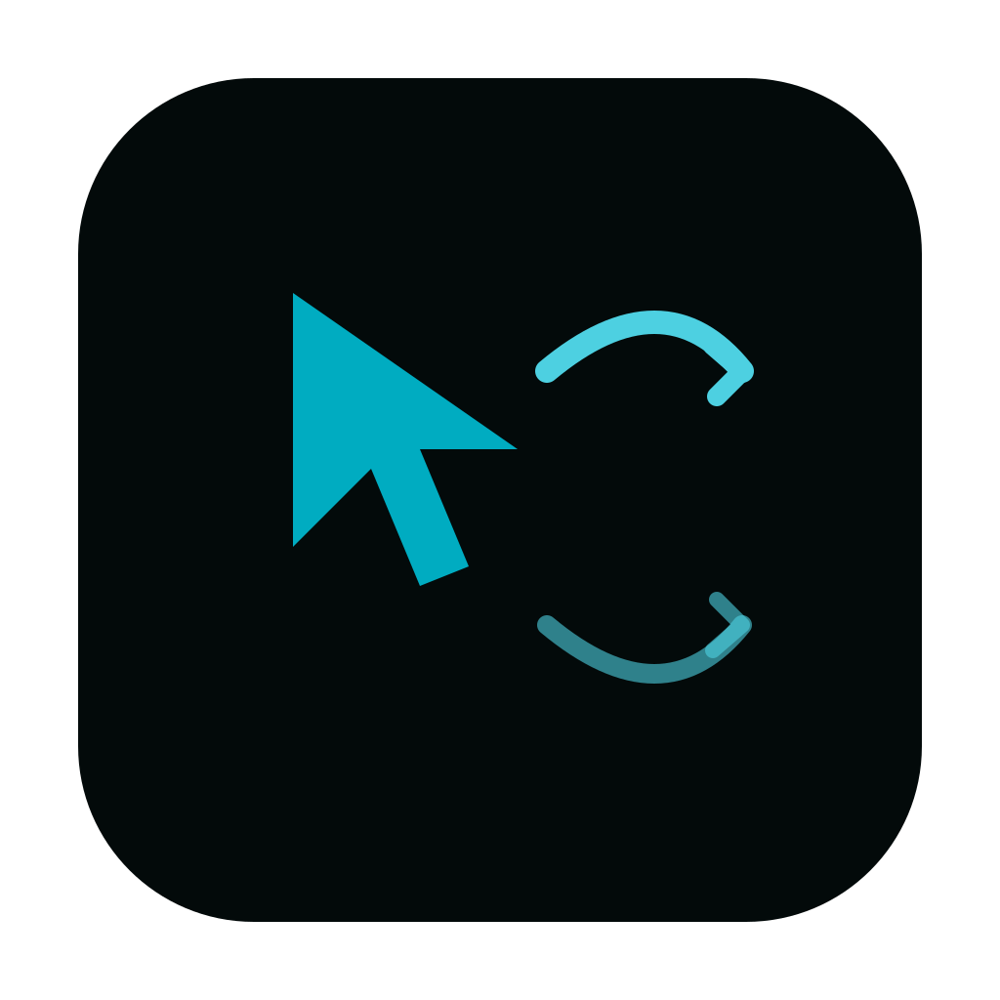
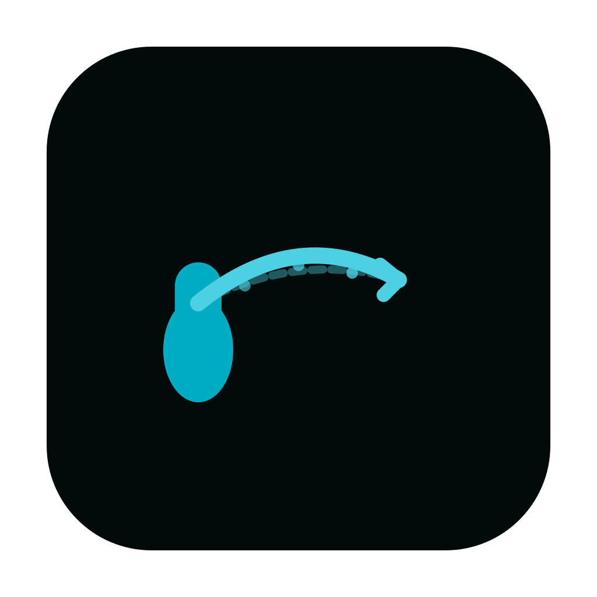
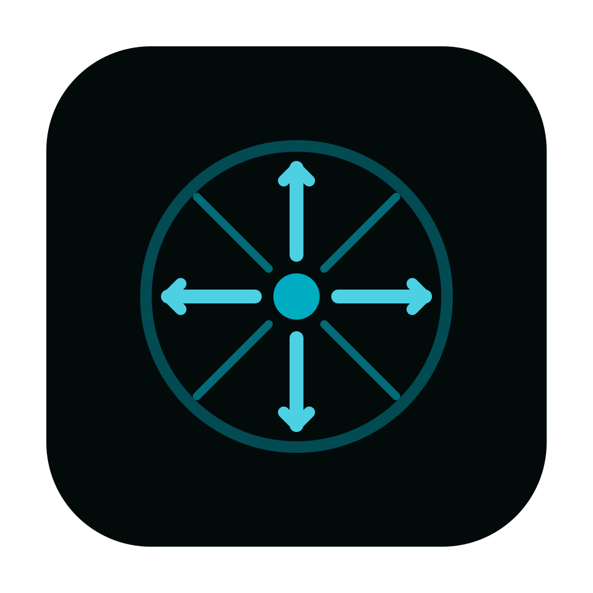
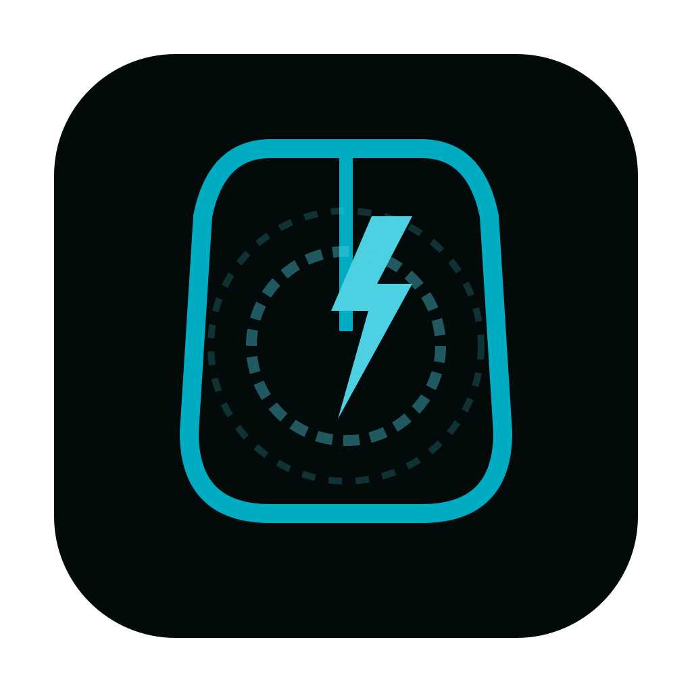
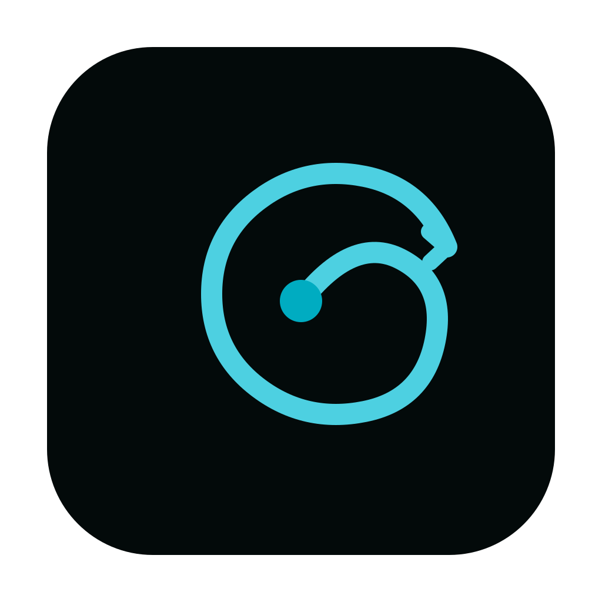
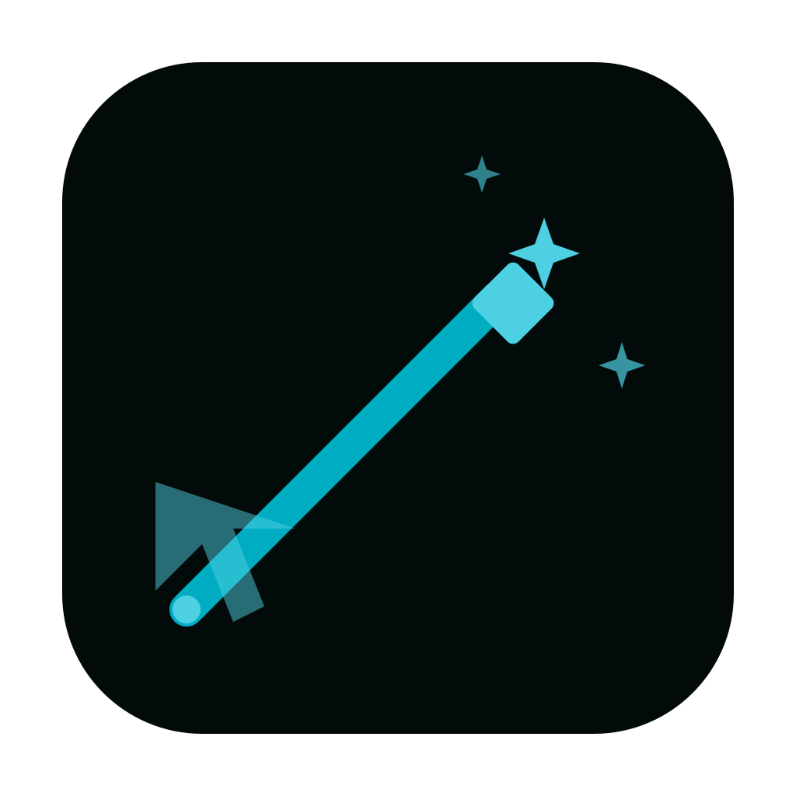
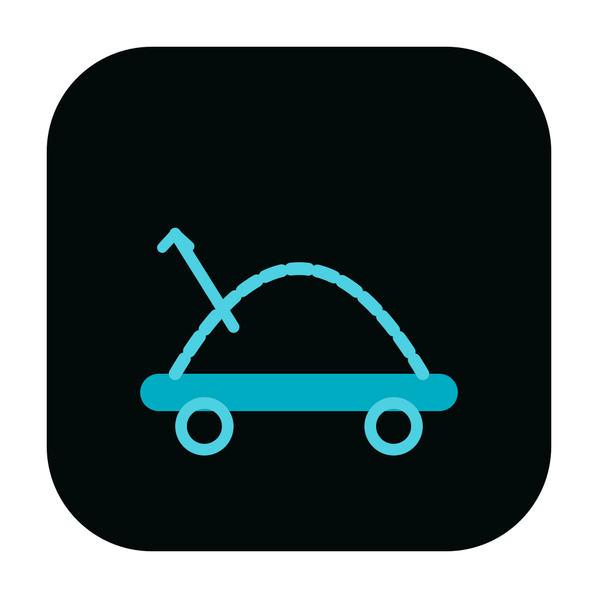
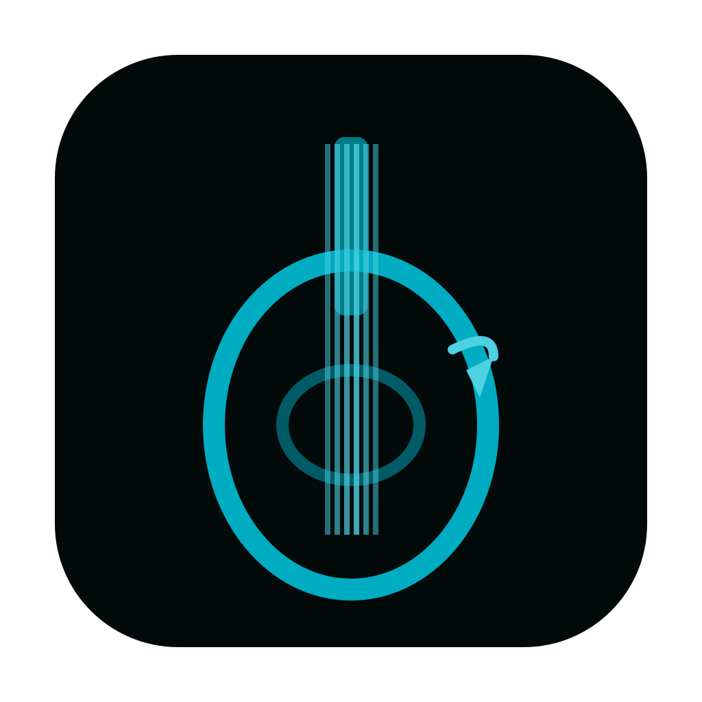
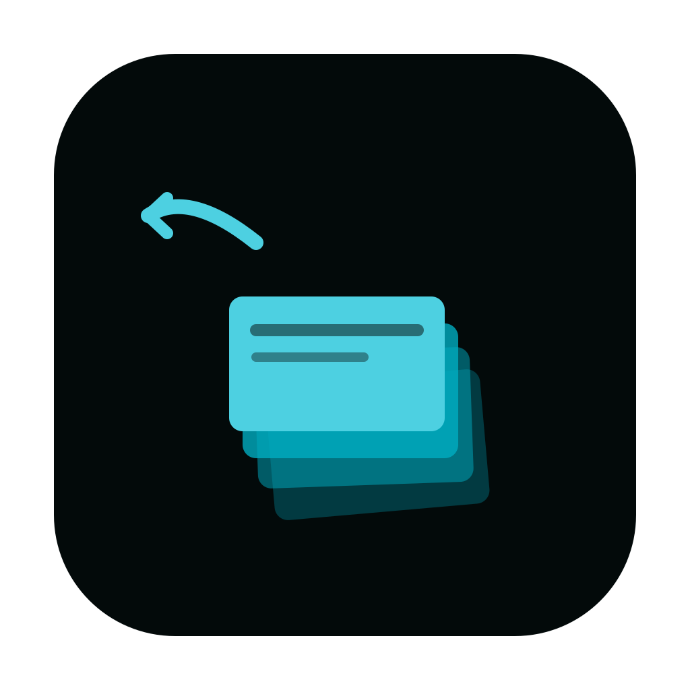
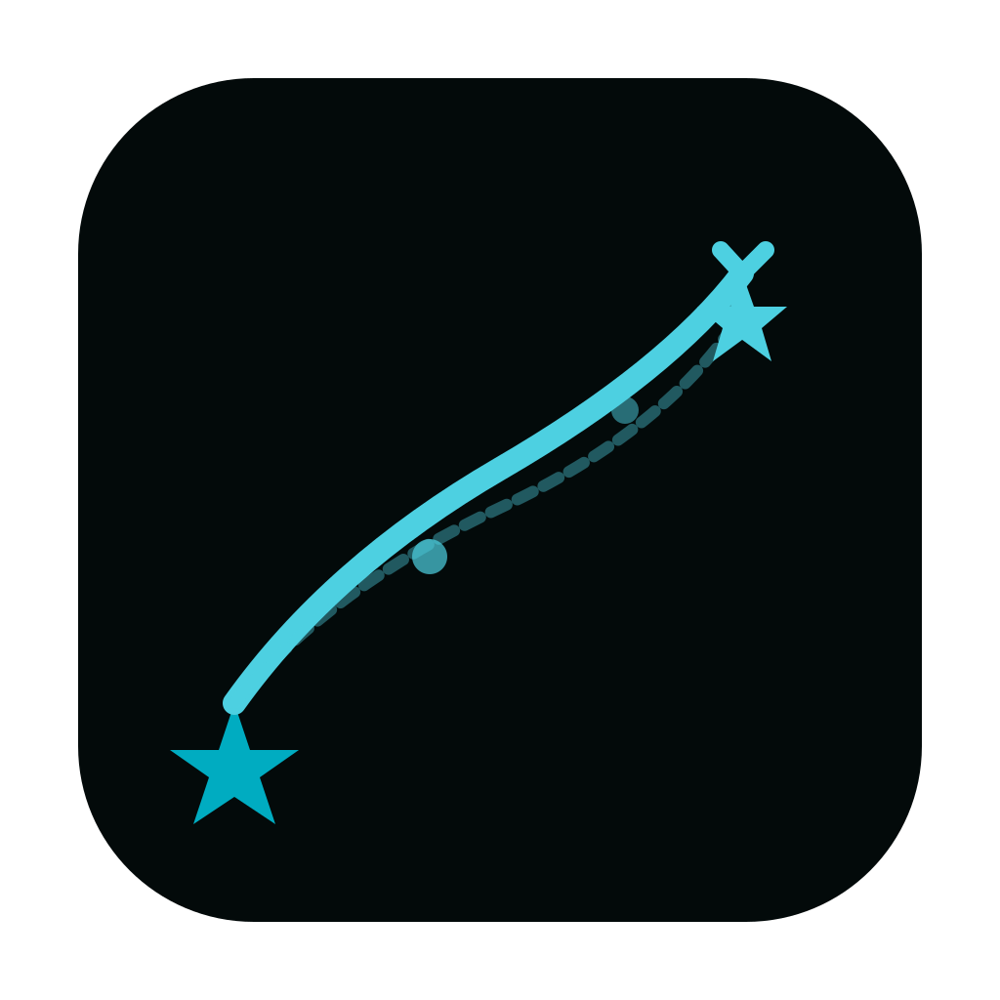

Candidate_20260320_0104 | 마우스 제스처/플릭 단축키 도구

icon_01.svg마우스 커서 + 제스처 화살표
icon_02.svg손가락 스와이프 궤적
icon_03.svg8방향 나침반 제스처
icon_04.svg번개 빠른 클릭
icon_05.svg소용돌이 플릭 회전
icon_06.svg마법완드 커서
icon_07.svg스케이트보드 플릭 점프
icon_08.svg기타 피킹 플릭
icon_09.svg카드 날리기
icon_10.svg별 추적 궤적 라인